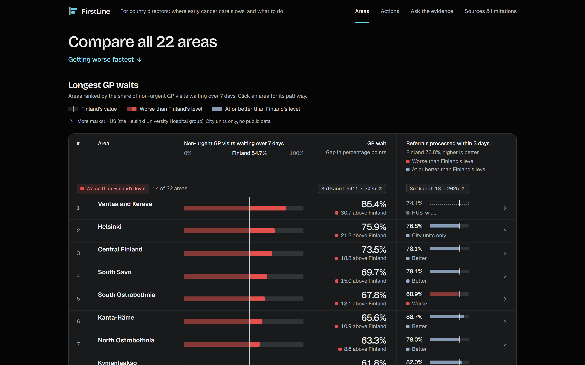
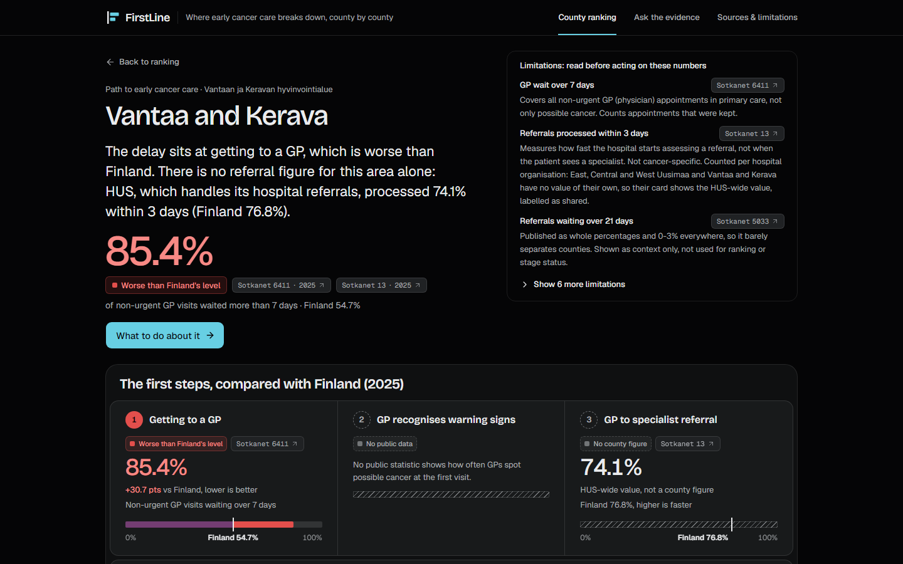
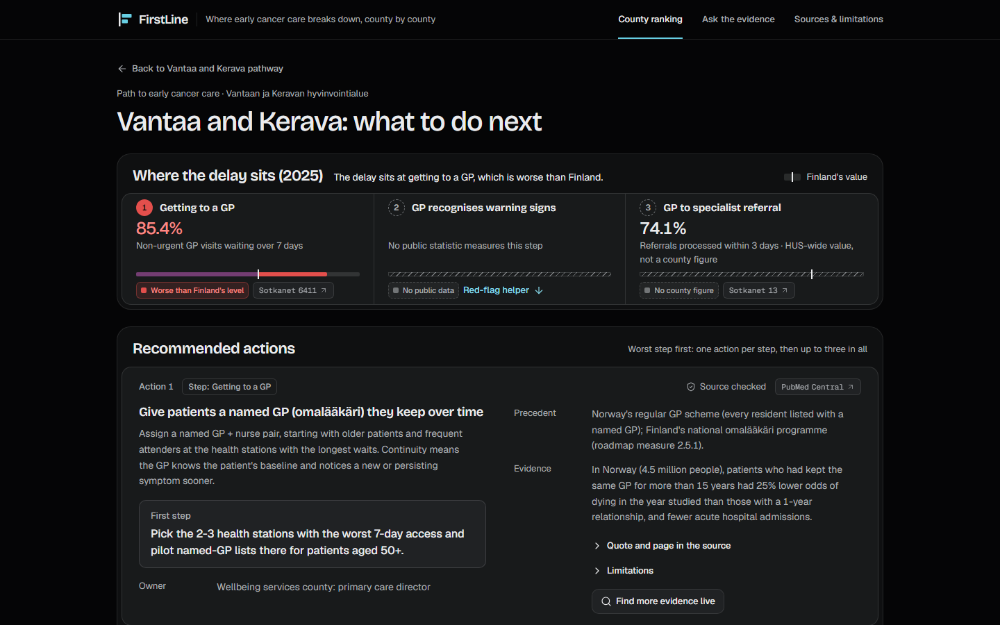
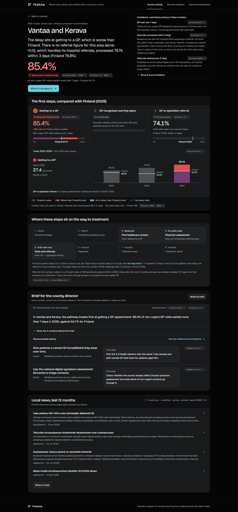

Junction 2026 · AstraZeneca: Equal Care Across Finland · Exa
FirstLine
Shows a wellbeing services county director where the first step of early cancer care breaks in their county, and what to do about it on Monday.
The problem
In Vantaa–Kerava, 85% of non-urgent GP visits come more than a week after people ask. In Päijät-Häme it's a third.
THL Sotkanet 6411 · 2025
Counts all non-urgent GP visits, not only possible cancer.
Non-urgent GP visits more than 7 days after need was assessed, 2025
Who it's for
notices a symptom
wait for a non-urgent visit
Sotkanet 6411 · 2025referrals processed in 3 days
Sotkanet 13 · 2025The numbers sit in national tables. Nothing shows a county director which step breaks, or what worked elsewhere.
Finland's cancer roadmap asks for stronger GP access (measure 2.5.1). STM cancer strategy roadmap · 2026–2031
The product

Map of 22 areas: the verdict, the top action and a what-if. The full ranking sits below.

worseat or betterno data
Vantaa–Kerava: the delay is getting to a GP.

Actions with owner, first step, precedent and source, plus a red-flag helper.
Screenshots of the live app, firstline-finland.vercel.app, 14 Nov 2026 (main f7caadf, 1440×900 viewport; blank side margins trimmed).
Act ✓ checked evidence
median time to diagnosis, Denmark
In the app: South Ostrobothnia, red at both steps
odds of dying, same GP >15 years vs 1 year (Norway, observational)
In the app: Vantaa–Kerava, GP access
outcomes vs doctors, probably (18 trials)
Trust
No source, no row.
6411 isn't cancer-specific. 4 areas, incl. Vantaa–Kerava, have no referral figure of their own: the app shows the HUS-wide value, labelled.
Validators drop any claim whose number isn't in its source.
Public data only. No patient data. Decision support, not diagnosis.
Live layer · Exa
14 actions, each quoted from its source.
FirstLine evidence table · 2026
Question box: answers only from linked results, or “nothing found”.

Local news panel, Vantaa–Kerava county page, live site, 14 Nov 2026.
How it's built
The ask
Pilot with one wellbeing services county: pick the 2–3 health stations with the worst 7-day GP access and start named-GP lists there for patients aged 50+. FirstLine evidence table · 2026